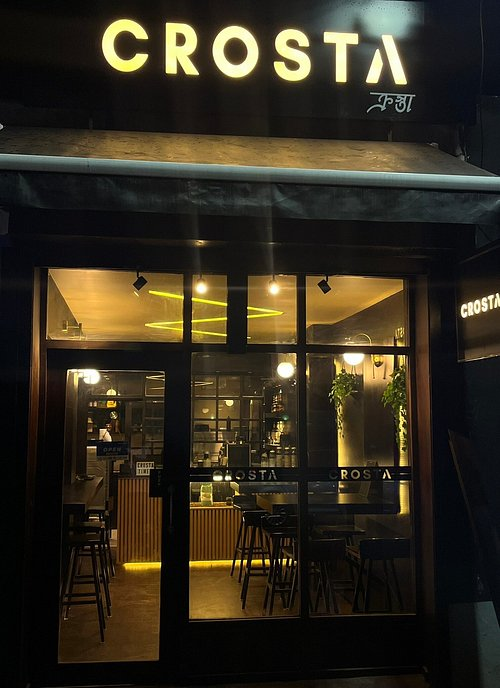

Cafes & Coffee Culture
Cafes are more than places to buy coffee. They are spaces where people relax, study and socialize.
From a quiet morning coffee to conversations with friends, cafes have become an important part of everyday life. Although coffee culture varies from one place to another, the simple joy of sharing a good cup of coffee connects people around the world.

Visit Arabika
Visit Crosta